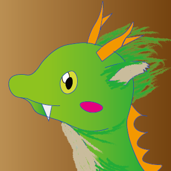

About > me

Shimon Dotera
Hello World!
I’m a Front-end Developer.
Let me introduce myself using…


<div class='profile'>
- <div class='name'>堂寺志門</div>
- <div class='handle'>メープルもみじ</div>
- <div class='status'>情報系大学4年生</div>
- <div class='hobby'>Web制作/音楽/アニメ鑑賞</div>
- <div class='playing'>Splatoon2/モンハンワールド</div>
- <div class='specialty'>ボイパ</div>
</div>
.profile
- .name 堂寺志門
- .handle メープルもみじ
- .status 情報系大学4年生
- .hobby Web制作/音楽/アニメ鑑賞
- .playing Splatoon2/モンハンワールド
- .specialty ボイパ
- .name::before {content:'堂寺志門';
- .handle::before {content:'メープルもみじ';
- .status::before {content:'情報系大学4年生';
- .hobby::before {content:'Web制作/音楽/アニメ鑑賞';
- .playing::before {content:'Splatoon2/モンハンワールド';
- .specialty::before {content:'ボイパ';
}
}
}
}
}
}
$profile: {
- name: '堂寺志門',
- handle: 'メープルもみじ',
- status: '情報系大学4年生',
- hobby: 'Web制作/音楽/アニメ鑑賞',
- playing: 'Splatoon2/モンハンワールド',
- specialty: 'ボイパ'
};
@each $key, $val in $profile {
.#{$key}::before {
content: '#{$val}';
}
}
$(‘#jquerBtn’).click(function(){
var profile = {
- name: '堂寺志門',
- handle: 'メープルもみじ',
- status: '情報系大学4年生',
- hobby: 'Web制作/音楽/アニメ鑑賞',
- playing: 'Splatoon2/モンハンワールド',
- specialty: 'ボイパ'
}
$('#textArea').text(profile)
}
render() {
return (
<div>
- <name>堂寺志門</name>
- <handle>メープルもみじ</handle>
- <status>情報系大学4年生</status>
- <hobby>Web制作/音楽/アニメ鑑賞</hobby>
- <playing>Splatoon2/モンハンワールド</playing>
- <specialty>ボイパ</specialty>
</div>
)
}
entry: {
- name: '堂寺志門.js',
- handle: 'メープルもみじ.js',
- status: '情報系大学4年生.js',
- hobby: 'Web制作/音楽/アニメ鑑賞.js',
- playing: 'Splatoon2/モンハンワールド.js',
- specialty: 'ボイパ.js',
},
output: { path: __dirname, filename: "bundle.js" }
- name : 堂寺志門
- handle : メープルもみじ
- status : 情報系大学4年生
- hobby : Web制作/音楽/アニメ鑑賞
- playing : Splatoon2/モンハンワールド
- specialty : ボイパ